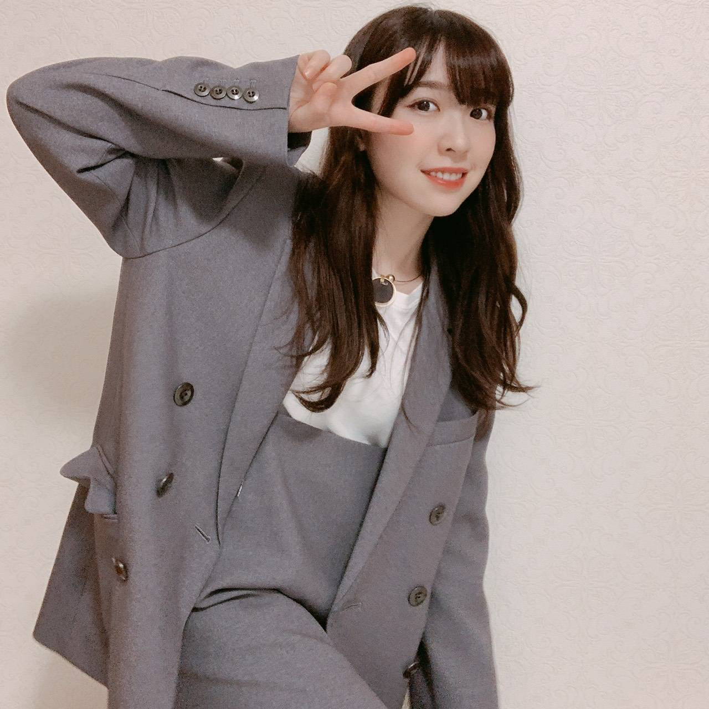

2020/1101Sun21の記憶
花奈さん、白石さん
ご卒業おめでとうございます。
そして本当にお疲れ様でした！

2018年の握手会

2017年の夏、懐かしい、笑
お二人は私にとって大切なお姉ちゃん
8年間共に乃木坂46として歩めたことを
とても誇りに思います。
ああ、大好きー、寂しいーー。
色々な思い出があるけど秘めておきたい。
私の心の中に大切にしまっておきます
大好きで尊敬するお姉ちゃん達、
本当にお疲れ様でした。

そして、今日で21歳になりました！
まちこちゃんに(ひなちまの事ね)
「みり愛って今19歳だっけ？」
って言われるくらいに
メンバーやファンの方からしたら
21歳は驚かれる年齢となりました、笑
13歳で乃木坂46に入り、
そして今8年目に突入しています。
いつも変わらず応援して下さる皆様
ありがとうございます。
私ってたぶん乃木坂の中で1番
普通の子、何も特徴がないし
これといった趣味もない
だからと言って不得意な事もない
アイドルらしいとは言い難い女の子。
それなのにファンの皆様は
いつだって私を見てくれています
沢山の期待を持ってくれています
私を乃木坂46として、ステージで
きらきら輝けるように支えてくださっています
本当に嬉しいんです、ありがとう。
そして乃木坂46が本当に大好き！
21歳も少しでも皆様の期待に
応えられるよう努力は変えず
頑張って参ります！

そんな本日は
オンラインミート&グリートでした！
誕生日の日に皆さんとお話が出来て
私はとても嬉しいです
私に見せるために
わざわざケーキを買ってきてくれたり
部屋に飾り付けをしてくれたり
仮装して笑わせてくれたり
用意したお手紙を読んでくれたり
「みり愛のファンは本当に楽しそうで
面白いね」とマネージャーさんに
言われるほど。笑
私は改めて幸せ者だなあと感じました。
皆さんは私に力を貰ってるよ！と
言って下さるけれど
それは私も同じです！凄くジーンと
心にくる新しい生誕祭のような感じでした。
本当に本当にありがとう。

みり愛


コメント(898)
チャァオ〜〜〜!☆彡
みりちゃま〜〜〜〜⤴️⤴️⤴️❕❤️❤️❤️❤️❤️笑顔
工事中見たよ〜〜⤴️⤴️⤴️❕❤️❤️❤️❤️❤️笑顔
みりちゃま、後輩思いで優しい〜ねぇ〜〜⤴️⤴️⤴️❕❤️❤️❤️❤️❤️笑顔
(＠＾▽゜＠）ゞ❤️❤️❤️❤️❤️
❇️❇️おすまし！⚜️❇️⭐彡
ふと、そう呼んでみたくなった、、。
今のは聞かなかったことにしてくださいm(_ _)m
色々とあった今年もあと二日。
明日は紅白ですね。
楽しみにしてます♪♪
忙しいとは思いますが、頑張ってくださいねー
毎日、リピートして聴いてます！
聴くたびに、涙が出そうになります。
みりあも自分を信じて頑張ってください！！
ダンスとても、上手いです！！
チャァオ〜〜!☆彡
リズちゃん、写真で一言❕笑顔
「人参よ〜〜〜傍にいて〜〜❕❤️❤️❤️」
(シャクシャクシャク、モグモグモグ❕)
みりちゃま、歌番組楽しみにしています❕❤️❤️❤️❤️❤️笑顔
頑張ってねぇ〜〜❕❤️❤️❤️❤️❤️笑顔
(＠＾▽゜＠）ゞ❤️❤️❤️
❇️❇️おすまし！⚜️❇️⭐彡
レコ大みたよー！！
みり愛が最後の方でにアップで抜かれた！！
もう感激〜！！
みり愛のファン増えちゃう〜！
今度のミーグリもみり愛全ブッコミしなきゃ〜！！
今年もありがとう！！
来年もよろしくみり愛！！
墨書うちわのみぅらっくすより♪
☆『レコード大賞』見ていましたよ、、、
すぐに見つけられましたよ !!
大きい賞の特番に出られるなんて素晴らしい !!
２期生が全員出場 エモい と思ってたら、
１期生も全員出場 超エモい
今回は、歴史的なことだったんですね、、
☆カレンダー二本ほか 届きました。
ぎりぎりで先ほど、届きました、、、
これから、架け替えたいと思います、、、
☆『紅白』 楽しみにしています。
いよいよ、大変な今年も あと二日
紅白には全員で出られると楽しみにしています。
まだ第３波は登山中のようです、、、
また寒い冬も始まっています、、
くれぐれも身体を大切にしてくださいね。。。。。
あらやだー、たくさん映ってるじゃなーい、あらやだー、
って思いました。
レコ大観ましたよー♪
思いっきり映っていましたね。
今年もレコ大の舞台に立ちましたね～
明日で今年も最後っ！
ファイト！！
お久しぶりです
レコ大お疲れ様でした
ちゃんと見つけましたよ(笑)
惜しくも最優秀賞は受賞できませんでしたが、素晴らしいパフォーマンスだったと思います
来年は受賞できるといいですね！
それでは
レコード大賞観ました。
年末にみり愛ちゃんを見れました。
嬉しいですねえ。
かなり寒いので、
体調崩さないように
気をつけて下さいね。
毎年生演奏で披露されるのでとても楽しみにしていました！
昨年のSing Out!もそうでしたが、生演奏向けの楽器編成がまたまた良かったですね！
今回は過去3回のレコ大で一番しっとりとした曲ゆえに、後ろまで皆の顔が隅々まで見られましたし、それに加えて、みり愛さんがカメラに抜かれたサプライズに嬉しさも一入でした！
宣言通りアンダラでの赤みを帯びた髪色から少し変えられましたね～
今年の紅白はRoute246。
Routeでのみり愛さんは気合いを感じるポニーのイメージがありますが、どうされるか楽しみです！
先週の乃木中、珠美さんの誕生日を救った話は初出しネタでしたね！
ちょうど良い文章で、先駆けて後輩をフォローする所、その気遣いが好きですよ～
また、少し前の乃木恋イベントですが、日奈子さんと誉め合う動画がいつものノリでしたね！
何か言おうとしているみり愛を誉めて遮る日奈子さんに 笑
彼イベの告白動画は昔のNOGIBINGO予選コーナーを思い出しましたね！
ただ、あの頃と違って同じ制服姿なのに流石に演技に大人の余裕を感じました～
年越しまでお仕事だと思いますので応援してます！
それでは少し早いですが、良いお年を！
レーズンパンをあむあむあむ[壁]ｴ＿)
アップ渡辺殿きゃわわうれぴーぽーo(￣◎￣)o ﾊﾞﾌﾞｩ♡
レコード大賞☆「世界中の隣人よ」ダントツ可愛い渡辺殿発見ﾜﾝ (･x･U)≡≡≡３
名曲でめっちゃ感動ぽっぽぽー壁]ω･U ﾆｬ♡
ほんじつも雪見だいふくパワー100万馬力でばいころまる( ;-(ｴ)-)ゞｸﾏ
レコ大観たよー！
もう、美しいみり愛ちゃんめっちゃ映っていて沸いたー！
２期生が揃っていたことにも感激したなあ。
ダンスナンバーも良いけど、こういった楽曲もしっとり聴けて本当に良かったよ！
世界中の隣人よ
今年は本当に特殊で世界中が大変な一年だったなって、振り返りながら聴いていたよ。
みり愛ちゃんたちが心を込めたこの歌、
きっと沢山の人の心にも響いたと思うよ！
今年はやっぱりLiSAさん強かったね！
でもあのような夢のような大舞台にいるみり愛ちゃんたちって本当に凄い！
そして今年一年の締めくくり
紅白歌合戦もしっかり楽しんでね！
みり愛ちゃんの勇姿しっかり見届けるぞー！
色んなことがあった一年だけど、なによりみり愛ちゃんが健康でいてくれて嬉しい。
みり愛ちゃん今年も本当にお疲れさま！
良いお年を☺️
今日は大晦日ですね。
待ちに待った紅白歌合戦の日です(^ ^)
全力なパフォーマンスで頑張ってね♪
楽しみにしてます(*^ω^*)
みり愛ちゃん、今年も本当にありがとうございました♪
来年も宜しくお願いします。
オンラインミート楽しみにしてますね！
良いお年を(^ ^)
サザンオールスターズのTシャツ（ちぃ君）
おはようございます
大晦日ですね
今年も一年ありがとうございました
コロナ禍の中での
アイドル活動、大変でしたね
そんな状況の中、
様々なコンテンツを届けてくれたことに
厚く感謝致します
実は、今年一番最初のコメントで
ずっきゅん依存症は
｢世界中の人々が健やかに過ごせますように｣
と一年の祈願をしてたんです
残念ながら
その願いは叶わなかったけど
来年はきっと明るい希望に
満ちているはず
たったひとりでも、
夢や希望を捨てないという人が
いる限り、
ずっきゅん依存症はやっていけます
そのひとりがみり愛なら、
なおさらのこと
いつも笑顔を元気を
ありがとう
いよいよ
今年最後の日になりましたね
大変な年だったけど
人と人との繋がりをより強く
感じることが出来た年でもありました
なんて言うか...
乃木坂って素敵だね
他のメンバーの成功や成長を素直に喜び
自分には厳しく謙虚に努力を重ね
楽しむときは思い切り楽しみ
決めるときは、バシッと決める
そんな乃木坂がだーい好きです
今年一年お世話になりました
この後の紅白も楽しみにしてますね
でもお風呂も入ったし
コタツにミカンも用意したし
紅白観る準備はバッチリです！
今年ラストの大一番バッチリ決めてよ！
衣装はどんなんだろ？
メイクはどうするの？
髪型は？ハーフツイン？
前髪は？
髪飾り、耳飾り、マツゲの上がり具合い
までバッチリ見つけるからね！
勿論、年越しの際にはジャンプします
今、何してます？
いや紅白の準備だよね
わかってます
観ます、そこまで言うなら
それはそうと、ちょっと一言物申させて
もらいたいことがあるのです！
今年も一年ありがとう
レコ大、素晴らしいパフォーマンスでした。
今日は今年最後のパフォーマンス、紅白歌合戦です。
最高のパフォーマンスを楽しみにしています。
今年は色んな事がありました。それでも楽しい時間をありがとうございました。
来年もよろしくね。
良いお年を～
じゃあね。
昨日のレコード大賞｢世界中の隣人よ｣最高でした。スペシャルバンドの中での披露今までとは違ったでしょう。みり愛ちゃんもピンで抜かれていた時の笑顔可愛いかった。
今日この後紅白。CDTVも出演するのかな？必ず見るから楽しんでねぇ～❕
昨日のレコ大、とっても良かったよ！私はみり愛がいることも嬉しくて、2期生全員出られたことが嬉しかったなぁ(๑ ᴖ ᴑ ᴖ ๑)
でもやっぱりみりちゃんが可愛い可愛いのよ、、ほんと可愛いのよ、笑笑
早くミーグリでみりちゃんのこと可愛いばっかり言いたいです(なんだそれ笑
改めて隣人いい曲だなぁって思ったし、新しい衣装も可愛い紫色だし、何よりわたし的にあのイヤリングめっちゃ可愛かった！
緊張した？たくさんソロで抜かれててみりちゃんが全国に見つかって嬉しいです〜来年もこの調子でみり活してくぞ！(なにそれ笑
今日はこれから紅白だね！めっちゃ楽しみ！
去年もなんか年越し前にみりちゃんにコメントした気がする笑笑
年内だとやっぱりコメントしたくなる笑
今年は会えなかったけど、ミーグリとかでみり愛と話せる機会があるってことだけで感謝しないといけないんだなって思う日々だったよ。就活も何度も何度も辛くなって毎日電車で泣いてたけど頑張れたのはみり愛に早く報告したいってモチベーションだけで生きてたよ。今はオンラインで面接するんだけどね、みり愛のグッズとか生写真おいて面接しちゃった、どんだけだよーってね笑
来年もミーグリとかでみりちゃんとお話できるといいな！
社会人になってもみり愛のことを誰よりも応援したいっていう強い気持ちでがんばる！みり愛も頑張ってるから！
そうそう、乃木恋の彼氏イベント初めてやったんだけどさ、ニックネームできなくてびっくりよー、、本名で描いてもらうのも嬉しいけどね！てか似顔絵会で本名書いてもらったから2回目だけどね！覚えてるかな、茉子だよ！この字がきたらまこぺんだーって思ってね笑
いつ届くか分からないけど楽しみにする！みり愛の字が大好きだもん！毎日寝る前に似顔絵会の見て寝るのが日課だもん〜笑
そんな感じで、来年もたくさんお話したりしようね！
蘭世のインスタのみりうしさんかわいかった！あのたまにするみり愛の顔めっちゃすきなのよ笑
今年もお疲れ様でした(*^^*)
来年もずっとみりちゃんが大好きだよ
2020年もたくさん、ありがとう。
2021年もみり愛にとって笑顔と健康な一年になりますように
まこうさぎ(まこぺんより)
みり愛のこと応援できて、直接会えなくてもたくさん良い思い出ができたよ！！
いつも素敵な笑顔と幸せをもらってばかりだから来年はみり愛の力に少しでもなれたらいいな〜
来年もこれからもずっとずっとよろしくね
どこにいてもずーっとみり愛のこと見てるぞー！大好き
紅白かっこよかった！お疲れ様
昨日のレコード大賞と紅白歌合戦お疲れ様。
「世界中の隣人よ」ではみり愛もソロカットで抜かれていてとても美しかったです！レコード大賞のステージにみり愛が立っていた事が何よりも嬉しかったです！
紅白歌合戦は、「Route246」で見ていてすごく見つけやすい場所で、紅白衣装似合ってましたし紅白でみり愛の姿を今年も目にすることが出来て良かったです！
今年もみり愛の事を推していてすごく楽しかったです。
来年もみり愛の活躍を楽しみにして推させていただきますのでよろしくです！
今年も1年お疲れ様でした！
紅白観ましたよ！
全員でのRoute246、迫力ですねっ
みり愛ちゃんは上手の方にいましたね♪
しっかりと観ましたよー
CDTVにも出るのですね♪♪
楽しみにしてます♪
来年も宜しくお願いします！！
年の最後に有観客ライブができたことが
何より良かったです
今まで当たり前にできたことが
ある日突然できなくなってしまった現実に
失望や葛藤があったと思います
だからこそ
あのライブは大きな意味がありました
来年は少しでも日常を取り戻したいですね
今年ほど
エンターテインメントに心を救われたことはありません
みり愛ちゃんの存在に本当に励まされた年でした
ありがとうございました
2021年も全力で応援しますよ！
紅白お疲れさま
衣装がめっちゃかっこよかったよ
ダンスナンバーによく似合ってたよ
パフォーマンスもかっこよかったなぁ
いつか生で見てみたいなぁ。。。
そんな日がくればいいけど
今年も一年お世話になりました
大変な時期だけど
乃木坂発信で日本中を明るく
していけたらいいですね
来年もよろしくお願いします
良いお年を
レコード大賞と紅白お疲れ様！
レコ大でソロカットで抜かれててめっちゃ嬉しかった！
紅白もフルメンバーでのパフォーマンスかっこよかったよ！
年末にたくさんみり愛ちゃんのパフォーマンス観れて嬉しかった！
CDTVも楽しみにしてるね！
今年1年お疲れ様！
今年は大変な年だったね
去年の今頃は握手会でみり愛ちゃんに会いに行くのがすごく楽しみだったのに、今年は直接会えなかったのは残念だったな〜
でも、10月のミーグリで毎週話せたのは本当に楽しかったし、モバメもたくさん送ってくれてて、毎日たくさん元気貰ってた！
みり愛ちゃんの努力を見て俺も頑張れてたし、たくさんいい思い出ができた！
改めてみり愛ちゃんを好きになって本当によかった！！
今年も1年間本当にありがとう！！
来年もずっと応援してるね！！
みり愛ちゃんの活躍楽しみにしてる！
来年も体調には気をつけて頑張ってね！
またコメントするね〜
今年もよろしくお願いします。
ずっと応援してます。
明けましておめでとうございます
そして紅白、CDTVお疲れ様でした
今回もちゃんと見つけましたよ
今日はゆっくり休んでくださいね
それでは
レコ大、紅白からCDTV年越しでみり愛ちゃんを見つけて
歓喜!!!
遅くまで起きててよかった笑
2021年最高の幕開けです!!
遅い時間までお疲れ様でした～
それではおやすみなさーい♪
今年も一年通してみり愛ちゃんが健康で過ごせますように！
紅白歌合戦、テレビの前で応援していたよ！
赤い衣装が鮮やかで大人っぽくて都会的な感じのパフォーマンスカッコ良かったよー！！
今年もダントツ可愛い渡辺殿♡応援してまいりますΣ(=∇=ﾉﾉﾋｨｯｯｰ!!
紅白歌合戦‼ぷらーばですわおほほほほ壁|▽//)ゝﾃﾚﾃﾚ
Route246☆歌って踊るみり愛てやんきゃわわうれぴーぽーo(￣◎￣)o ﾊﾞﾌﾞｩ♡
ほんじつも魔王城でおやすみやっほっす～(o^∀^)パワー100万馬力でばいころまる( ;-(ｴ)-)ゞｸﾏ
昨年は本当にお疲れさまでした
私もいつもと違う日常に戸惑いを覚え
また、コロナで父を亡くすという悲しい出来事もあった年でした
いくら気をつけても気をつけ過ぎってことは
ないので本当に充分に予防してくださいね
新年早々暗い話をして申し訳ありません
さて、今年は希望に満ち溢れた
素晴らしい年になることを願っています
乃木坂、そしてみり愛の更なる
飛躍を祈願致します
今日から正月休みでしょうか？
多分、相当にお疲れだと思いますので
ゆっくりと静養されてくださいね
あっ、お餅の食べ過ぎには注意するのだよ
それでは今年もよろしくお願い致します
みり愛ちゃん、新年明けましておめでとうございます♪
今年も宜しくお願いします。
紅白歌合戦観ました♪
壇上の1番右側にいたのが樋口日奈ちゃんで、みり愛ちゃんはその左上にいましたよね？
見つけることが出来て良かったです！
相変わらずキレのあるダンスで素敵でしたよ(^ ^)
乃木坂メンバー全員が揃っての『Route246』本当に素晴らしかったです♪
大晦日に幸せな時間をありがとうございました。
CDTVもお疲れ様でした！
少しだけみり愛ちゃんとの思い出話をさせてください。
握手会で初めてお会いした時は、みり愛ちゃんはまだ16歳でしたね。
ラブライブの話で盛り上がり、とても気さくで話しやすかったので、それがきっかけでみり愛ちゃんを推すようになりました。
何回か通い出して、いつだったか僕が握手会でラブライブの推しメンを聞いたときにみり愛ちゃんが名前をど忘れしちゃって、その名前を聞き出すために急に鈴木絢音ちゃんを呼び出して僕の前にご本人が登場したのは驚きました（笑）
握手会のルール上いけないことかもしれませんが、本音を言うと「こんなこともあるんだぁ」と思い、めっちゃ嬉しかったです（笑）
来てくれた絢音ちゃんにも感謝です！
みり愛ちゃんは、その時のこと覚えてますか？
ちなみに、みり愛ちゃんが『ラブライブ！サンシャイン!!』の渡辺曜ちゃん推しだということはちゃんと覚えてますよ♪
それと、みり愛ちゃんは最初からしっかりしてる印象はありましたが、今はさらに大人になりましたね。
初めてお会いしたその当時は初々しくて可愛かったのが、今では美しい大人の女性になっちゃって、本当に素敵です♪
みり愛ちゃんは誰にでも優しくて、後輩のメンバーからも慕われている存在だと思っています。
僕は、みり愛ちゃんのお兄さんと年齢は同じですが、それが本当に申し訳ないです。
こんな情けない僕ですが、これからもずっと仲良くしてくださいね。
繰り返しになりますが、2020年は本当にありがとうございました。
2021年も宜しくお願いします。
コロナ禍で大変な状況ではありますが、早く収束して世界中のみんなが笑顔でいられる日が来ることを願ってます。
コメント読んでくれてありがとう♪
2021年もさらに飛躍した１年になりますように、みり愛ちゃんも頑張ってね！
良いお正月をお過ごしください。
またコメントします。
サザンオールスターズのTシャツ（ちぃ君）
今年は、楽しく充実したい年になりますように。
今年も応援していきますよ。
明けましたおめでとうございます。
今年もよろしくお願いします。
今年も楽しみましょう。
じゃあね。
お正月は楽しく過ごせていますか？
本日2回目のコメントになります。
少し時間が出来たので、僕が大晦日の夜に何をしていたかお話させてください｡
朝方、ブログのコメントで紅白歌合戦を観たというお話をさせていただき、感想も書かせていただきました。
紅白歌合戦で乃木坂ちゃんを観た後のお話になりますが、一応続きがあって、夜の22時からサザンオールスターズさんの年越しライブ（配信ライブ）を観ながら大晦日を過ごしてました。
今回は生配信ではなく、事前に収録されたものを配信するという形になりました。
理由は参加される人全員が安心して楽しめることを優先して、コロナの安全対策という意味でこの形をとったそうです。
僕の大好きな曲も多くてとても良かったのですが、カウントダウンもやってくれてサザンの年越しライブがより楽しめました♪
ただ実際は、年越しカウントダウンの30秒前が表示された時にはすでに日付けが変わっていました(･･;)
多少のタイムラグはあるので仕方ないですね（笑）
ちなみに、僕も最近知ったのですが、年越しライブの元祖がサザンオールスターズさんと言われており、1984年の大晦日に新宿コマ劇場で日本で初めて年越しライブを行ったのがサザンオールスターズさんだそうです｡
今では他のアーティストさんも年越しライブを行っていますが、1番最初に行ったのがサザンなんですね。
あと、ライブの最後には花火があって、「疫病退散」と「無病息災」の願いを込めて、こちらも事前収録されたものではありますが全国複数箇所で花火が打ち上げられた映像が流れました。
とても感動的な映像を観て、新年を迎えることが出来ました！
紅白歌合戦で乃木坂メンバー全員が揃ってのパフォーマンスを観た後に、サザンオールスターズさんの年越しライブを観るという贅沢な時間を過ごせて幸せでした(^ ^)
余談ですが、この年越しライブの公式アンバサダーは僕の大好きなお笑い芸人のさまぁ〜ずのお二人でした！
コメント読んでくれてありがとう♪
体調に気をつけてお過ごしください。
またコメントします。
サザンオールスターズのTシャツ（ちぃ君）
年末はたくさん音楽番組に出られて嬉しかったです。特に、
レコ大でみり愛さんがばっちりカメラに抜かれて本当に嬉しかった❗️❗️2021年も頑張ってくださーい✨応援しています。
みり愛おはよ〜
今年もよろしくお願いします！
いつも年末年始の休みは旅行に行ったりしてたけど、今年は家にこもってるよ
去年はたくさんみり愛に会いに行きたいなと思ってたけど、全然会いに行くことが出来なくて、正直つまらない事の多い1年だったかな〜
今年もしばらくは握手会とかは難しいと思うけど、ミーグリ参加するから、よろしくね！
この休みでは、久しぶりにマーベルの映画を一気に見直してるよ！
日奈子がマーベルの話よくしてたのがきっかけで見るようになったんだけど、すごくはまってしまった
みり愛ちゃんも時間があれば見てみて！
なんだかんだ休みも残り少なくなってしまった…
またコメントするねー
きっとみり愛は自分ではメンバーとのお話を出してないことも多いと思うし、表に出てる場面ではあまり見せてないかもしれないけど、、それでもたくさんのメンバーからみり愛に声掛けてもらった！とか支えてもらった！ってお話を聞くことが多いから本当にメンバー想いで、グループ想いで素敵だなって思った (*^^*)
本当に素敵な人を押すことができて、、毎日何も無くても幸せを感じる！ありがとう (≧∇≦)
またみり愛と話せる日楽しみにしてるね！！
みんなの配役も完璧にハマってるし、何よりも探偵さんが可愛すぎる笑
ちっちゃくて少し適当そう？な探偵さん可愛すぎるのに、ダンスシーンかっこよすぎて何回も見てる〜笑
またミーグリで直接MVのお話できるの楽しみにしてるね(≧∇≦)
素敵なMVありがとう〜
レコ大みたよー！！
みり愛が最後の方でにアップで抜かれた！！
もう感激〜！！
みり愛のファン増えちゃう〜！
今度のミーグリもみり愛全ブッコミしなきゃ〜！！
今年もありがとう！！
来年もよろしくみり愛！！
墨書うちわのみぅらっくすより♪
コメントする